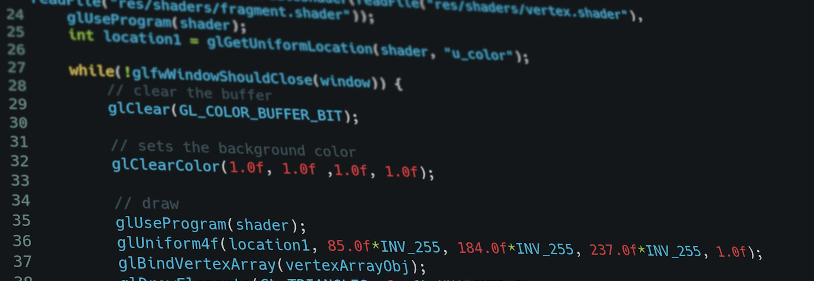

Post #1 - Quem sou?
Olá, eu sou o Kelwin! Desde criança sempre fui muito curioso, e adorava ajudar meus familiares, mexer com ferramentas e consertar algumas coisas. Aos meus 16 anos (2018) comecei a trabalhar, mas logo em seguida optei por estudar, pois tinha conseguido uma bolsa no SENAI no CAI de Eletricista de Manutenção Eletroeletrônica. E foi lá que abri meus olhos para a área da elétrica e me surpreendi bastante com inúmeras coisas relacionadas a área. Com 17 anos, para acrescentar mais aos meus conhecimentos, ingressei na Etec em um curso um nível acima do que estava cursando no SENAI, entrei no curso Técnico em Eletrotécnica e estou podendo agregar bastante. E um tempinho depois entrei na Fatec Osasco no curso de Automação Industrial mais voltado para a área que me identifiquei nos dois cursos anteriores. Tenho visão de que sempre temos que estar em processo de aprendizagem, ou seja, conforme vamos aprendemos uma coisa, sempre surgirão outras novas, e temos que estar preparados para isso. Então, busco o desenvolvimento contínuo de minhas Soft Skills e Hard Skills para um bom desempenho pessoal e profissional.